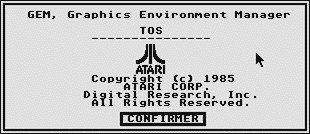
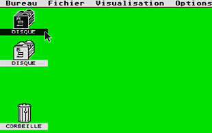
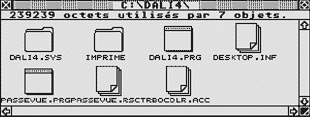
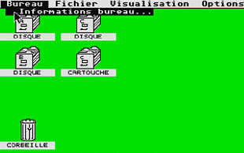
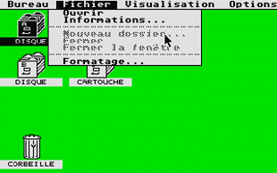
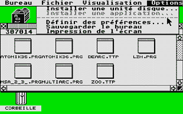
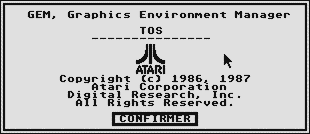
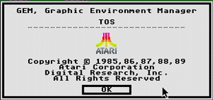
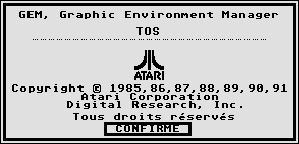

|  |
TOS version 1.00 |
Sur les premiers ST, le TOS 0.9 béta se trouvait sur disquette et non sur ROM. Pour les premiers acheteurs, l'ordinateur est doté d'un bureau avec des icones et un menu déroulant.Lorsque l'on "boot" sur une disquette (vierge ou ROM), le bureau GEM apparait comme ceci :

Il est généralement composé de 2 icones représentant les lecteurs A et B ainsi qu'un icone poubelle pour éffacer les fichiers d'un lecteur.
Lorsque l'on clique sur l'icone d'un lecteur, une fenêtre GEM apparait à l'écran :

Par défaut on visualise le contenu de la disquette ou d'un repertoire sous forme d'icone ce qui permet de distinguer les répertoires des programmes.
Le coin haut gauche de la fênetre permet de revenir en arrière dans la hiérarchie du lecteur mais aussi de fermer la fenêtre lorsque l'on est sur la racine du lecteur. Le coin haut droit de la fênetre permet d'aggrandir completement la dimension de la fenêtre. Le coin bas droit de la fenêtre permet d'aggrandir ou de rétrécir la dimension de la fenêtre selon les désirs de l'utilisateur. Les flêches permettent de visualiser le contenu total de la fenêtre tout en le faisant défiler. La barre du haut de la fenetre indique où on se trouve dans la hiérarchie et sur quel disque, elle permet aussi de déplacer la fenêtre tout en cliquant avec le bouton gauche de la souris.Le bureau GEM comporte 4 sections :
- BUREAU : donne les informations sur la ROM.

- FICHIER : 6 options s'offrent à vous
- OUVRIR permet de visualiser le contenu d'un lecteur.
- INFORMATIONS permet de connaitre la taille d'un fichier, la place restante d'une disquette ou encore de changer le nom.
- NOUVEAU DOSSIER créé un repertoire.
- FERMER réagi comme le coin gauche d'une fenetre GEM : il permet de revenir à la racine de la disquette jusqu'à la fermeture de la fenetre.
- FERMER LA FENETRE ferme la fenetre courante.
- FORMATAGE formate une disquette selectionnée en simple ou double face.

- VISUALISATION : permet de visualiser le contenu d'une fenêtre GEM soit sous forme d'icone ou de texte trié par nom, date, taille ou type.

Une fois stabilisé, il fut mis en ROM en 1986 avec comme version 1.0 sur les premières séries de 520 STF et 1040 STF avec l'alimentation et le lecteur de disquette intégrés (le TOS gère l'extension de mémoire vive).
Le TOS 1.2 surnommé "MEGA TOS" équipa la gamme MEGA STF puis 520 et 1040 STF avec une différence de l'ancienne version : il gère le BLITTER et l'horloge permanente. Premier : l'accès disque est trop lent, mais avec l'expansion du ST, le TOS évolua ...
|  |
TOS version 1.40 |
Cette version du TOS sort en 1989 avec la correction du BUG d'accès disque. Il est disponible sur la gamme MEGA STF au 520 ST. (capture d'écran)
Des modifications ont été apportées au niveau du bureau :
- Les fonctions formater et copier sont dans la même boite de dialogue.
- Les disquettes peuvent etre formatées au format 720 (DD) ou 360 (SD).
- Renommer les dossiers.
- Il autorise un déplacement du fichier sans le dupliquer lorsque l'on appuie en même temps sur la touche CONTROL.
- La touche UNDO permet d'annuler les déplacements, copie et suppressions de fichiers.
Spécification de la ROM |
|
|---|---|
| Capacité totale en Kilo octet | 192 |
| Adresses mémoires | de xxFC0000 à xxFEFFFF |
|  |
TOS version 1.62 |
Les premières séries de 520 et 1040 STE furent équipées du TOS version 1.6 ou 1.06 aussi désigné "STE TOS rev1". Elle fut rapidement remplacée car un bug dans l'écriture du fichier DESKTOP.INF empêchait de booter en moyenne résolution.
Surnommé le "Rainbow TOS" ( le logo du bureau cycle sur les couleurs de l'arc-en-ciel).
Il va équiper principalement la gamme du STE avec de nouvelles fonctions.
Au niveau du bureau :
- L'exécution de programme au démarrage de la machine (programme GEM inclus). (capture d'écran)
- Le sélécteur de fichier s'enrichit. (capture d'écran)
- Reset manuel : combinaison des touches Control+Alternate+Del.
- On peut déplacer des fichiers sur des applications.
- Le formatage de disquette peut-être reconnu par le DOS.
Au niveau du hardware :
- Gestion du son stéréo.
- Une palette de couleur composée de 4096 couleurs.
- Apparition de cookie jar qui décrit la machine et différents composants.
Spécification de la ROM |
|
|---|---|
| Capacité totale en Kilo octet | 512 |
| Adresses de la première extension mémoires | de xxE00000 à xxE3FFFF |
| Adresses de la deuxième extension mémoires | de xxE40000 à xxE7FFFF |
|  |
TOS version 2.06 |
Le TOS 2.5 est développé principalement sur le MEGA STE en 1991. De part sa grande innovation, on essaya de l'adapter pour le STF ( meme en faisant les modifications hardware ) mais sans succès ...
En 1992 sort le TOS 2.06, RETOUR 2048 adaptera ces ROMS de 1 Mo chacunes. Sous l'appelation "MODE 2.6", le TOS 2.06 sera installable sur la gamme ST,STF et STE pour une compatibilitée "multi-machines". (capture d'écran du bureau)
Les changements au niveau du bureau sont :
- Recherche de fichier.
- Touche CONTROL qui inhibe le boot (disquette ou DD)
- Styliser le bureau ou les fenêtres ( 8 styles et 16 couleurs ). (capture d'écran)
- Choix de l'apparition des fenêtres.
- Un jeu d'icones intégré dans la ROM. (capture d'écran)
- Raccourci clavier. (capture d'écran)
- Chargés ou sauvegardés plusieurs types de bureau. (capture d'écran)
- Installation d'une péripherique ou d'une application sur le bureau.
- On est plus limité avec l'ouverture de 4 fenêtres.
Au niveau du hardware :
- Conservation de l'ancien TOS de la machine.
- Un boutton switch permet le choix de l'ancien TOS ou du TOS 2.06.
- Peu enfin gérer les lecteurs de disquettes haute densité via un module hardware.
Spécification de la ROM |
|
|---|---|
| Capacité totale en Kilo octet | 1000 |
| Adresses mémoires exploitées | de xxE00000 à xxE3FFFF |
Il existe des utilitaires (ou patchs) qui permettent de palier aux bugs des différents TOS :
Les ROMs sont protégées par le (C)COPYRIGHT et donc sont interdites à la vente, à la copie ou de la reproduction selon l'avis de ou des auteurs, propriétaires des marques.
Toutefois on peut se reserver l'usage des ROMs à des fins personnels et non collectif mais tout ceci reste toujours dans le domaine de l'inégalité.
L'auteur du site donne quand même l'adresse ou on peut télécharger sur sa page de liens , il y a toutes les ROMS (sauf pour FALCON) et dans presque toutes les langues.
En espérant que vous en ferait bonne usage ... FrEd!.